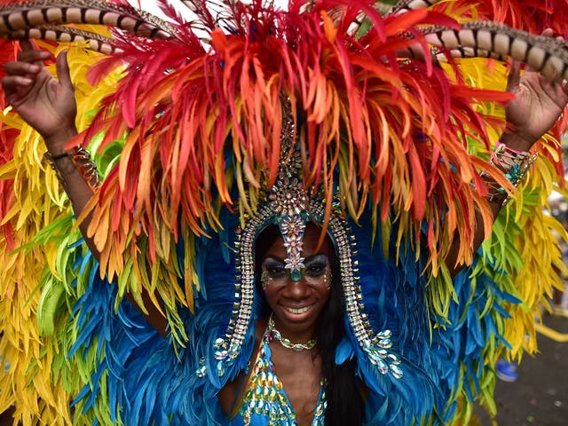
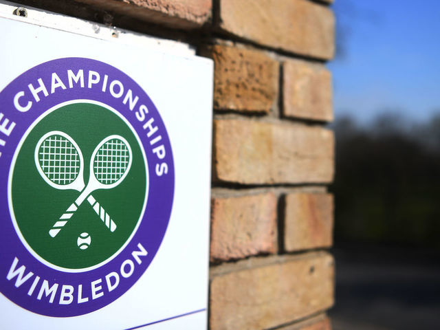
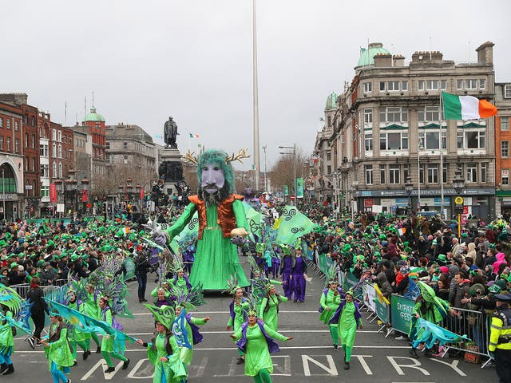

Events
There are alot of events constantly happening in london, there is always alot of events to enjoy on a monthly bases. Some of the biggest annual events in London include Notting Hill Carnival, Wimbledon tennis, St Patricks day, while in winter, top London events include the New Year's Eve fireworks, Winter Wonderland event in Hyde Park and the Chinese New Year annual celebrations.
Notting hill Carnival 2021
August 2021
About
Join London’s biggest street party as the Notting Hill Carnival 2021 fills the streets of west London with Caribbean colours, music and flavours. Watch elaborate floats and colourful costumed performers wind their way through the streets in the carnival parade, dance to the sound of steel bands and calypso music, and visit the tempting food stalls along the route. The carnival usually takes place on the streets of London W10 and W11, around Notting Hill, Ladbroke Grove, Westbourne Grove, Westbourne Park and Kensal Road. The Notting Hill Carnival route usually remains the same every year and can be found on the official app, which features a Notting Hill Carnival map. Notting Hill Carnival happens every year on the last weekend of August,However Notting hill carnival 2021 has not been confirmed yet.
Wimbledon tennies championships
From 28 june to 11 july 2021
About
Experience two weeks of first-class tennis, served with strawberries and cream at the Wimbledon Lawn Tennis Championships. The world of tennis descends on Wimbledon in south-west London every summer for the longest-running tennis tournament in the world, and one of four annual Grand Slam tennis events held around the globe Games are still played on the original playing surface, grass, and there's a strict white-only dress code for players. The tournament attracts around 500,000 spectators including the royal family and millions of television viewers worldwide.
St Patricks day
March 2022 (already passed in 2021,catch it next year.)
About
Join in the lively Irish celebrations with St Patrick’s Day events and activities in London. Every 17 March, Ireland celebrates one of its patron saints, St Patrick, with a national holiday and a traditional feast. Although it is not a public holiday in England, London marks St Patrick’s Day with fun and spectacular events every year, usually on the weekend closest to 17 March. Be amazed by flamboyant pageantry, elaborate floats, marching bands from across the UK, sports clubs and Irish dancing schools in the annual London St Patrick's Day Parade. The procession sets off at midday from Piccadilly and makes its way along a 1.5-mile (2.4km) route, passing some of London’s most iconic landmarks, including The Ritz, Piccadilly Circus, Trafalgar Square and onto Whitehall. oin the St Patrick's Day Festival, which takes place in Trafalgar Square. Watch St Patrick’s Day performances by well-known Irish acts, rising stars and special guests. Then, browse craft stalls, and tuck into traditional and modern Irish food from the market. There is also usually a family zone on Pall Mall East, hosting an array of free child-friendly entertainment, workshops and activities. You can also celebrate St Paddy's Day with parties and Guinness in London's Irish pubs and bars, many of which are decorated in green for the occasion.
Those are only a few major events that london has to offer around this time of year. There are even more evens that are schedualed to take palce later in the year and some have already passed earlier this year